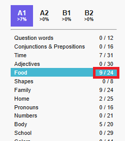
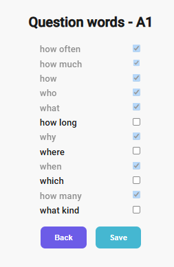
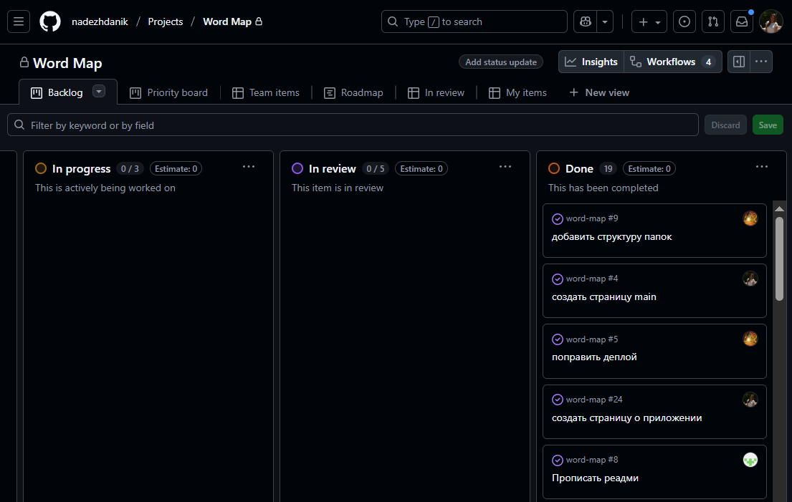

Angular course presentation
1. WordMap
2. Старт с трудностями
- Совместный разбор ТЗ и попытки вникнуть в суть дела.
- Выбор проекта и проработка архитектуры.
- Первый опыт работы с Firebase.
3. Краткое описание проекта
- WordMap - это приложение для заучивания английских слов (пополнение словарного запаса).
- Все слова разбиты на уровни (от А1 до В2) и категории (семья, дом и тд).
- Есть возможность убрать уже знакомые слова из списка, чтобы сосредоточиться на незнакомых.
- Для каждого уровня и каждой категории отображается прогресс.
4. Архитектура приложения
5. Страницы "Registration" и "Login"
6. Страницы "Home" и "Category"
7. Страницы "About" и "Profile"
8. Игры "True/False" и "Match Pairs"
9. Страницы "Learn Words" (учить по карточкам) и "Edit Words List" (убрать изученные слова)
10. Выбор цветовой темы: light → dark
→
11. Демонстрация работы приложения на примерах
Отображение прогресса на основе данных из базы Firebase:
→

12. Демонстрация работы приложения на примерах
Изменение прогресса:
→

→
→
13. Демонстрация работы приложения на примерах
Особенность учета прогресса для каждого слова:
→
→
14. Обзор используемых технологий
15. Тесты:
- Jasmine + Karma (по умолчанию в Angular CLI)
- Unit-тесты: ключевые компоненты, сервисы, пайпы — все проходят
- E2E (Cypress): проверка основных потоков и ошибок
- Mock HTTP: тестовые данные и обработка ошибок при входе/регистрации
16. Accessibility:
- Клавиатурная навигация по основным элементам интерфейса.
- Семантические теги и стили фокуса.
- Лейблы и ARIA-атрибуты для форм и меню.
- Проверка с помощью WAVE Evaluation Tool
17. Discord: от хаоса к системе
- Cозвоны 2-3 раза в неделю.
- Отчет о проделанной работе в work-status Discord и на доске GitHub.
- Структурированние в Discord.
18. Слаженная работа с Git и GitHub
- Доска задач - четкое разделение
- Ветки - у каждого своя
- Коммиты - четкое описание
- Пулл-реквесты - по шаблону
- Код-ревью от других членов команды на каждый ПР
- Конфликты при слиянии - минимально
19. Слаженная работа с Git и GitHub
Доска задач - четкое разделение

20. Слаженная работа с Git и GitHub
Коммиты - четкое описание
21. Слаженная работа с Git и GitHub
Пулл-реквесты - по шаблону
22. Слаженная работа с Git и GitHub
Код-ревью от других членов команды на каждый ПР
слияние после 2 одобрений
23. Что можно улучшить или доработать в будущем
- Доработать списки слов для уровней А2-В2.
- Добавить интернационализацию для интерфейса.
- Добавить фото и аудио материалы в Storage Firebase
- Добавить еще игры и упражнения.
24. Заключение и выводы.
Пройдя этот нелегкий путь, мы:
- Освоили новые технологии (20 Angular, Firebase, GitHub Actions).
- Познакомились ближе с а11у и тестами (в том числе Cypress).
- Повысили навыки работы с Angular Material, Git и др.
- Повысили навыки работы в команде.
Благодарим за Ваше внимание!